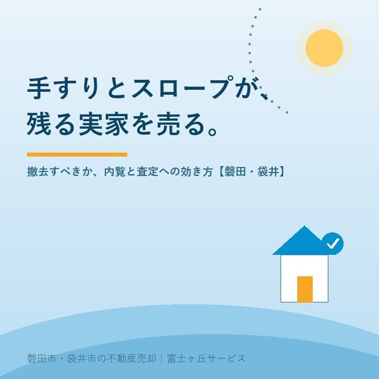

2026年8月18日｜カテゴリ：売却実務／介護と住まい

この記事の要点
Q. 母が施設に入り、実家を売ることになりました。廊下もトイレも手すりだらけで、玄関の外にはスロープが付いています。介護保険を使って付けたものなので、売る前に外して元に戻さないといけないのでしょうか。
A. 外す必要はありません。介護保険の住宅改修費は、手すりの取付けや段差の解消などの工事費用に対して一人あたり20万円を限度に給付されるもので、給付を受けた後に設備を返したり、原状回復したりする定めは置かれていません。売却しても給付の返還を求められることはありません。ただし、まったく別に注意すべきものが二つあります。ひとつは「工事をしていない手すり」。据置型や突っ張り型は福祉用具貸与（レンタル）で、こちらは被保険者が亡くなったり施設に入ったりすれば返却が必要です。もうひとつは屋外のスロープ。敷地の外にはみ出していたり、道路の後退部分にかかっていたりすると、撤去や道路占用の問題として売買の条件に直結します。内覧と査定への効き方も、屋内と屋外でまるで違います。磐田市・袋井市では、介護施設の運営から不動産事業を始めた富士ヶ丘サービスのような「介護×不動産」専門の会社に相談するという選択肢があります。
お母様が施設に入られたあと、はじめて実家に上がると、家の中の「痕跡」に気づきます。
玄関の上がり框に付いた縦手すり。廊下の壁を伝う長い横手すり。トイレのL字型の握りバー。浴室の入口の段差をなくした床。そして玄関の外に、コンクリートで打たれたスロープ。
これらの多くは、ケアマネジャーさんと相談して、介護保険の住宅改修を使って付けたものです。ご家族にとっては「母のためにやったこと」の記録でもあります。
その家を売ると決めたとき、必ず出てくるご質問がこれです。「これ、外さないといけませんか」。
今日はこの一点を、制度の側と、売買の実務の側の両方から整理します。内容は2026年8月18日時点で公表されているものに沿って書きます。
売却の話に入る前に、必ず先にやっていただきたいことがあります。家の中の介護用の設備を、「工事したもの」と「借りているもの」に分けることです。
ここを混ぜたまま話を進めると、あとで必ず困ります。
厚生労働省の告示で、介護保険の住宅改修の対象は次の6種類と定められています。
① 手すりの取付け
② 段差の解消
③ 滑りの防止及び移動の円滑化等のための床又は通路面の材料の変更
④ 引き戸等への扉の取替え
⑤ 洋式便器等への便器の取替え
⑥ その他①〜⑤の住宅改修に付帯して必要となる住宅改修
限度額は要介護度にかかわらず一人あたり20万円。そのうち負担割合に応じて1割・2割・3割が自己負担です。磐田市の案内でも、この点ははっきり示されています。
そして忘れられがちな要件が3つあります。
最後の「所有者の承認」は、あとで効いてきます。実家が親御さんの持ち家なら問題になりませんが、借家だった場合は、貸主に承諾書を書いてもらっているはずで、そこに原状回復の約束が書かれていることがあります。
一方、工事を伴わない手すり——床に置くだけの据置型、天井と床で突っ張る突っ張り型——は、住宅改修ではなく福祉用具貸与、つまりレンタルです。
ここが今日いちばん大事な分かれ目です。
レンタル品は、利用していた方が亡くなったり、施設に入所したりすれば、事業者へ返却しなければなりません。工事した手すりのようにそのまま置いておくことはできません。
| 介護保険の住宅改修（工事） | 福祉用具貸与（レンタル） | |
|---|---|---|
| 代表例 | 壁にビス留めした手すり、コンクリートのスロープ、床材の変更、引き戸への交換、洋式便器への交換 | 据置型手すり、突っ張り型手すり、車いす、介護ベッド、可搬型スロープ |
| お金の仕組み | 一人20万円を限度に給付（自己負担1〜3割） | 月々のレンタル料（自己負担1〜3割） |
| 売却するとき | そのままでよい。返還・原状回復の定めはない | 返却が必要。放置すると引渡しに間に合わない |
| 売却前にすること | 残す・外す・直すを判断する | ケアマネジャー・貸与事業者へ連絡し引き取り日を決める |
実務でよくあるのが、決済の直前に「これ、レンタル品でした」と分かるケースです。引渡しは室内を空にして行うのが原則ですから、そこから慌てて事業者に連絡することになります。
売ると決めた日に、ケアマネジャーさんへ一本電話を入れてください。「レンタルで借りているものは何がありますか」。これで片付きます。残置物の考え方は残置物と現況引渡しにまとめています。
結論を先に書きます。介護保険の住宅改修で付けた手すりやスロープを、売却にあたって撤去しなければならないという制度上の決まりはありません。
住宅改修費は、あくまで工事にかかった費用の一部を給付する仕組みです。設備そのものを貸しているわけではないので、返す先がありません。所有者が変わっても、給付の返還を求められることはありません。
ですから制度の側から見れば、「そのままでよいか」の答えは、そのままでよいです。
もうひとつ、ご家族から聞かれることがあります。「20万円、使い切らずに残っています」。
この残額は、同じ住宅にお住まいの間なら、残りの範囲で再度申請できます。また、要介護状態区分が3段階上がったとき、または転居したときは、あらためて20万円の限度額が設定されます。
ここで大事なのは順番です。実家を売り、親御さんがお子さんの家に移って同居する、という流れなら、転居先の住宅で、あらためて20万円の枠が使えます。「実家で使い切れなかったから損をした」という話ではありません。転居先で必要な工事があるなら、先に住民票を移し、工事の前に市へ申請する。この順番だけ間違えないでください。
制度の話をもうひとつ。国土交通省の令和8年度税制改正の内容として、バリアフリー改修工事を行った住宅に対する固定資産税の減額措置が5年間延長され、適用期限は令和13年（2031年）3月31日となりました。
内容は、新築から10年以上経過した住宅で、高齢者等が居住し、一定のバリアフリー改修（自己負担50万円超）を行った場合、工事完了の翌年度分の固定資産税について、1戸あたり100㎡相当分までの税額の3分の1が減額されるというものです。
これは売る側の話ではなく、買う側・住み続ける側の話です。しかし覚えておく価値があります。「この家をバリアフリーのまま活かして住みたい」という買主にとっては、追加工事の後押しになる制度だからです。既存住宅の改修に対する磐田市の補助は磐田市の既存住宅リフォーム補助にまとめています。
ここからが不動産の話です。制度上は残してよい。では、売るために残すべきか。
私たちが現地を見てご説明するときの判断軸は、単純です。「機能として使えるものは残す。生活の痕跡は消す。中途半端に外さない。」この3つです。
廊下・階段・トイレ・浴室の壁にしっかり留まった手すりは、原則そのままで構いません。
理由は二つあります。ひとつは、買主にも高齢のご家族がいる場合が非常に多いこと。磐田・袋井では、親世帯との同居や近居を前提に中古住宅を探す方が一定数いらっしゃいます。「手すりが付いている」は、その層にはそのまま長所です。
もうひとつは、後から付けるとお金がかかること。壁の下地を探して補強するところからになるため、内覧で「これは助かる」と言われる場面は実際にあります。
一方で、外していただくのは「介護の生活が続いている」と感じさせるものです。
内覧で嫌がられるのは「手すり」ではなく「におい」と「使い込まれた消耗品」です。これはご家族が思っている以上にはっきり分かれます。内覧の準備は内覧で選ばれる家に書きました。
手すりを外すと、壁に必ずビス穴が残ります。下地補強のために板を当てていれば、その板の跡も残ります。クロスの日焼けで、外した部分だけ色が違って見えることもあります。
穴だけ空いた壁は、手すりが付いている壁より確実に印象が悪いです。外すと決めたなら、穴埋め・パテ・クロスの補修まで、その面はセットでと考えてください。そこまでやる予算がないなら、残したほうがよいというのが私たちの判断です。
| 場所・もの | おすすめ | 理由 |
|---|---|---|
| 廊下・階段・玄関の手すり | 残す | 買主側にも高齢の家族がいることが多い。外すと穴が残る |
| トイレ・浴室の握りバー | 残す（劣化していれば交換） | 後付けは下地から必要でコストが高い |
| 据置型・突っ張り型の手すり | 返却（レンタルの場合） | 返却義務がある。残すと引渡しに支障 |
| ポータブルトイレ・シャワーチェア | 撤去 | 生活の痕跡。内覧の印象を最も下げる |
| 室内の段差解消・床材変更 | そのまま | 気づかれにくく、機能としてはむしろ良い |
| 屋外のスロープ | 要調査（下記参照） | 敷地の内か外か、道路にかかっていないかで扱いが変わる |
屋内の手すりが「印象」の問題であるのに対して、屋外のスロープは、権利と行政手続きの問題になりえます。ここは不動産会社が必ず見る場所です。
玄関から道路まで距離がある家では、スロープが長くなります。勾配を緩くしようとすると、必然的に長く、幅も広くなるためです。
その結果、隣地との境界を越えていることがあります。あるいは、隣家が黙認してくれていたケースも実際にあります。親御さんの代の話し合いが口約束で終わっていると、売却の段階で表に出ます。越境の扱いは越境と草の話で詳しく書きました。
幅が4mに満たない道に接する敷地では、建築基準法第42条第2項により、道路の中心線から2m後退した線が道路境界線とみなされます（セットバック）。
この後退部分には、原則として建築物や工作物を置けません。再建築の際には撤去を求められます。スロープや階段、門柱、フェンスがここに入り込んでいると、買主が建て替えるときの撤去費用が、値段の交渉材料になります。
この論点は再建築不可と私道とも重なります。
もう一段はっきりした問題がこれです。スロープの先が公道の側溝に乗っている、縁石を削って乗り入れを作っている、道路上に張り出している。
道路を継続して使用する場合には、道路法第32条による道路占用許可が必要です。また、縁石の撤去や歩道の切下げなど道路の構造に手を加える工事は、道路管理者の承認（道路工事承認）が要ります。磐田市では建設部道路河川課が窓口で、占用の申請は工事着手の14日前までとされています。
介護のために急いで作ったスロープほど、この手続きが抜けていることがあります。責める話ではありません。ただ、売買の前に確認しておけば、引渡し後のトラブルにはならないという話です。
売買では、売主が物件の状況を書面で買主に伝えるのが実務の標準です。手すりやスロープについては、次の3点を書けば十分です。
「言わなかったこと」が後で問題になるのであって、「書いてあること」は問題になりません。契約不適合責任の考え方は契約不適合責任に整理しています。
正直に書きます。手すりやバリアフリー改修が、査定額に大きく上乗せされることは、ほとんどありません。
理由は査定の方法にあります。中古住宅の査定は、近隣の成約事例と比べるのが基本です。そして成約事例のデータに「手すりの有無」は載っていません。比べる材料になっていないものは、価格に乗りにくいのです。査定額がどう作られるかは査定額のからくりに書きました。
ではなぜ気にするのか。効くのは「加点」ではなく「減点の回避」だからです。
| 状態 | 査定・成約への効き方 |
|---|---|
| 手すりが整った状態で残っている | 査定額はほぼ変わらない。ただし同価格帯の他物件との比較で選ばれやすくなる |
| 手すりを外した跡（穴・変色）が残っている | 内覧で「傷んだ家」に見える。指値の理由にされやすい |
| 介護用品が置かれたままになっている | 片付け費用と処分の手間を見込まれ、買取価格・指値に反映される |
| 屋外スロープが越境・後退部分にかかる | 撤去費用と手続きの負担が、交渉材料になる |
| 道路占用の手続きが未了 | 引渡し条件そのものに関わる。事前の確認が必須 |
つまり、手すりを残すかどうかで数十万円動くことはない。しかし、外し方を間違えると数十万円の指値の口実にはなる。これが実務の感覚です。
この地域には、屋外スロープの相談が多いという事情があります。
敷地が広いからです。磐田市・袋井市の郊外では、道路から玄関までゆとりのある家が普通です。都市部のように玄関を出れば道路、という造りではありません。その分、車を降りてから玄関まで、スロープを長く回して作ることになります。
そして、次のことが重なります。
屋外スロープは、決めてから外すのではなく、外す前に測るものです。境界標の位置、道路の幅、側溝との関係。ここを先に見ておけば、撤去するかどうかは自然に決まります。
当社は、磐田市見付で介護施設を運営するところから、不動産の仕事を始めました。
ですから、住宅改修の申請書を見たことがありますし、福祉用具の貸与事業者ともやり取りをしてきました。「この手すりは工事か、レンタルか」を現地で分けられるのは、その経験があるからです。
ご相談の入口は、たいてい「親が施設に入った」「親を看取った」です。そのときに、まずご一緒に見るのがこの3つです。
私たちが目指しているのは、高く売ることだけではなく、「家族が困らない売却」です。介護の費用と、相続人の事情と、売却の期限。この3つを一度に見られることが、介護から始まった不動産会社の強みだと思っています。
価格の話の前に、事実を整理する道具としてふじがおか実家カルテを用意しています。手すりやスロープの写真を送っていただければ、残す・外す・直すの目安までお出しします。
手すりは、ご家族が「まだこの家で暮らしてほしい」と願った証拠です。それを外すかどうかを、売却の都合だけで決める必要はありません。
残してよいものは残す。返すものは返す。外すなら直すところまで。この順番で考えれば、家はきちんと次の方へ渡ります。
ふじがおか実家カルテ｜介護改修が残る実家のご相談も承ります
その手すりは、外さなくていいかもしれません。
住所と写真をもとに、工事とレンタルの切り分け、屋外スロープの越境・後退部分・道路占用の確認順、内覧に向けて直すべき箇所、名義と相続登記の状況を整理し、次に何をすべきかを1枚にしてお出しします。作成料0円・入力約1分。申込みだけで売却依頼にはなりません。
本記事は2026年8月18日時点で公表されている法令・制度に基づく一般的な解説であり、個別の住宅改修や売買についての判断を示すものではありません。介護保険の住宅改修費の支給要件・申請手続きは市町村により運用が異なりますので、磐田市は高齢者支援課（0538-37-4869）、袋井市は介護保険の担当課へご確認ください。福祉用具の返却時期は貸与事業者およびケアマネジャーへご確認ください。道路占用・道路工事承認の要否は道路管理者（磐田市の市道は建設部道路河川課）へ、境界の確定は土地家屋調査士へ、相続登記は司法書士へ、譲渡所得の課税関係は税理士へご確認ください。個別のご相談は当社までどうぞ。

この記事を書いた人：大石浩之（宅地建物取引士）
磐田市・袋井市で「介護×相続×空き家」に特化した不動産売却支援を行う富士ヶ丘サービスの代表取締役・宅地建物取引士。介護施設の運営から不動産事業を始めた経験をもとに、売主とご家族が困らない売却を一件ずつお手伝いしています。プロフィール
磐田市・袋井市の実家じまい・相続空き家相談
固定資産税通知書だけでも相談できます
住所があいまいでも、通知書や写真から名義・道路・農地・残置物の確認順を整理します。カルテ申込またはLINEで状況を送ってください。
富士ヶ丘サービス株式会社／静岡県磐田市見付5789番地1／TEL:0538-31-3308／静岡県知事 (2) 第14083号／代表取締役・宅地建物取引士 大石 浩之